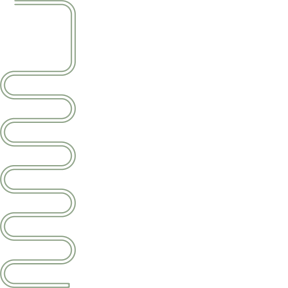
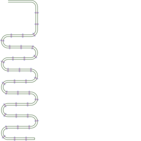
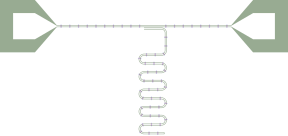

Tutorial: Working with Paths
Paths are one of the most powerful features of DeviceLayout.jl, allowing you to create complex transmission lines and other path-based structures. In this tutorial, you'll create a layout for a quarter-wave coplanar-waveguide resonator.
What You'll Learn
- Creating and manipulating paths
- Adding straight segments and turns
- Using path styles
- Creating tapers between different styles
- Attaching structures along paths
- Using periodic styles and overlays
- Adding launchers and terminations
- Splitting and splicing paths
Prerequisites
- Getting Started: Installing Julia and setting up your development environment
- First Layout: Learning the basics of creating geometries
Setup
using DeviceLayout, DeviceLayout.PreferredUnits
using FileIOStep 1: Creating the resonator path
A path is an ordered collection of segments, each with a style that determines how it's rendered. We'll start with a straight coplanar waveguide section. This will be the shorted end of our resonator, which will eventually be coupled to a measurement line.
# Create a path starting at the origin, pointing along the x axis
resonator_path = Path(Point(0nm, 0nm), α0=0°; name="resonator", metadata=SemanticMeta(:metal_negative))
# Origin and x axis are defaults, so `resonator_path = Path(; ...)` does the same thing
# Start with a straight segment at the top that will couple to a measurement line
# Add a straight segment with a simple CPW style (10μm trace with 6μm gap)
coupling_length = 200μm
resonator_style = Paths.CPW(10μm, 6μm)
straight!(resonator_path, coupling_length, resonator_style)
# Place in a CoordinateSystem
preview_cs = CoordinateSystem("preview")
place!(preview_cs, resonator_path)
preview_cs" fill-opacity="0.5" d="M 0 23.039062 L 288 23.039062 L 288 31.679688 L 0 31.679688 Z M 0 0 L 288 0 L 288 8.640625 L 0 8.640625 Z M 0 0 "/>
</svg>)
The start of the path is effectively shorted to ground already, but we can add rounding to a short with terminate!:
# This is already shorted, but let's add rounding to the short
terminate!(resonator_path; initial=true, rounding=3μm, gap=0μm) # 0μm gap => short
preview_cs # still holds the reference to `resonator_path`, don't need to re-add it" fill-opacity="0.5" d="M 0 27.359375 L 0.00390625 27.140625 L 0.0234375 26.921875 L 0.0507812 26.707031 L 0.0898438 26.492188 L 0.136719 26.277344 L 0.199219 26.066406 L 0.269531 25.859375 L 0.351562 25.65625 L 0.441406 25.457031 L 0.542969 25.261719 L 0.652344 25.074219 L 0.773438 24.890625 L 0.902344 24.714844 L 1.042969 24.546875 L 1.1875 24.382812 L 1.34375 24.230469 L 1.507812 24.082031 L 1.675781 23.945312 L 1.851562 23.8125 L 2.035156 23.695312 L 2.222656 23.582031 L 2.417969 23.480469 L 2.617188 23.390625 L 2.820312 23.308594 L 3.027344 23.238281 L 3.238281 23.179688 L 3.449219 23.128906 L 3.664062 23.089844 L 3.882812 23.0625 L 4.101562 23.046875 L 4.320312 23.039062 L 4.320312 31.679688 L 4.101562 31.675781 L 3.882812 31.65625 L 3.664062 31.628906 L 3.449219 31.589844 L 3.238281 31.542969 L 3.027344 31.480469 L 2.820312 31.410156 L 2.617188 31.328125 L 2.417969 31.238281 L 2.222656 31.136719 L 2.035156 31.027344 L 1.851562 30.90625 L 1.675781 30.777344 L 1.507812 30.636719 L 1.34375 30.492188 L 1.1875 30.335938 L 1.042969 30.175781 L 0.902344 30.003906 L 0.773438 29.828125 L 0.652344 29.644531 L 0.542969 29.457031 L 0.441406 29.261719 L 0.351562 29.0625 L 0.269531 28.859375 L 0.199219 28.652344 L 0.136719 28.441406 L 0.0898438 28.230469 L 0.0507812 28.015625 L 0.0234375 27.796875 L 0.00390625 27.578125 Z M 0 4.320312 L 0.00390625 4.101562 L 0.0234375 3.882812 L 0.0507812 3.664062 L 0.0898438 3.449219 L 0.136719 3.238281 L 0.199219 3.027344 L 0.269531 2.820312 L 0.351562 2.617188 L 0.441406 2.417969 L 0.542969 2.222656 L 0.652344 2.035156 L 0.773438 1.851562 L 0.902344 1.675781 L 1.042969 1.507812 L 1.1875 1.34375 L 1.34375 1.1875 L 1.507812 1.042969 L 1.675781 0.902344 L 1.851562 0.773438 L 2.035156 0.652344 L 2.222656 0.542969 L 2.417969 0.441406 L 2.617188 0.351562 L 2.820312 0.269531 L 3.027344 0.199219 L 3.238281 0.136719 L 3.449219 0.0898438 L 3.664062 0.0507812 L 3.882812 0.0234375 L 4.101562 0.00390625 L 4.320312 0 L 4.320312 8.640625 L 4.101562 8.632812 L 3.882812 8.617188 L 3.664062 8.589844 L 3.449219 8.550781 L 3.238281 8.503906 L 3.027344 8.441406 L 2.820312 8.371094 L 2.617188 8.289062 L 2.417969 8.199219 L 2.222656 8.097656 L 2.035156 7.984375 L 1.851562 7.867188 L 1.675781 7.734375 L 1.507812 7.597656 L 1.34375 7.449219 L 1.1875 7.296875 L 1.042969 7.132812 L 0.902344 6.964844 L 0.773438 6.789062 L 0.652344 6.605469 L 0.542969 6.417969 L 0.441406 6.222656 L 0.351562 6.023438 L 0.269531 5.820312 L 0.199219 5.613281 L 0.136719 5.402344 L 0.0898438 5.191406 L 0.0507812 4.972656 L 0.0234375 4.757812 L 0.00390625 4.539062 Z M 4.320312 23.039062 L 288 23.039062 L 288 31.679688 L 4.320312 31.679688 Z M 4.320312 0 L 288 0 L 288 8.640625 L 4.320312 8.640625 Z M 4.320312 0 "/>
</svg>)
We want to meander the path to reach a certain total length, so let's keep adding segments:
# Hanger geometry to get away from coupling region
# 90° clockwise turn with 50μm radius
bend_radius = 50μm
hanger_length = 200μm
turn!(resonator_path, -90°, bend_radius) # continues with same style
straight!(resonator_path, hanger_length)
turn!(resonator_path, -90°, bend_radius) # continues with same style
# Meander to target length
# Calculate number of turns
target_length = 4mm
remaining_length = target_length - pathlength(resonator_path)
straight_length = 200μm
turn_radius = 50μm
section_length = straight_length + pi*turn_radius
remaining_full_sections = Int(floor(remaining_length/section_length))
# Create meander
sgn = 1
for i in 1:remaining_full_sections
global sgn
straight!(resonator_path, 200μm)
turn!(resonator_path, sgn*180°, 50μm)
sgn = -sgn
end
# Finish path
straight!(resonator_path, target_length - pathlength(resonator_path))
terminate!(resonator_path; rounding=5μm) # Open termination with gap = CPW gap
preview_cs
Step 2: Creating the measurement feedline
We'll create a "CPW launcher" structure, with a wide pad where the external signal line is wirebonded to the CPW trace, tapering to a narrower style.
pad_style = Paths.CPW(300μm, 150μm)
narrow_style = Paths.CPW(10μm, 6μm)
feedline = Path(; name="feedline", metadata=SemanticMeta(:metal_negative))
# Straight, wide CPW
straight!(feedline, 250μm, pad_style)
# Explicitly taper to `narrow_style`
straight!(feedline, 250μm, Paths.TaperCPW(pad_style, narrow_style))
# Add open termination gap at the start
terminate!(feedline; initial=true)
# New CoordinateSystem to preview geometry
preview_feedline_cs = CoordinateSystem("preview_feedline")
place!(preview_feedline_cs, feedline)
preview_feedline_cs" fill-opacity="0.5" d="M 66.460938 0 L 66.460938 265.847656 L 0 265.847656 L 0 0 Z M 66.460938 199.382812 L 177.230469 199.382812 L 177.230469 265.847656 L 66.460938 265.847656 Z M 66.460938 0 L 177.230469 0 L 177.230469 66.460938 L 66.460938 66.460938 Z M 177.230469 199.382812 L 288 135.136719 L 288 137.796875 L 177.230469 265.847656 Z M 177.230469 0 L 288 128.050781 L 288 130.707031 L 177.230469 66.460938 Z M 177.230469 0 "/>
</svg>)
Continue the path and do the reverse at the other end:
straight!(feedline, 2mm, narrow_style)
straight!(feedline, 250μm, Paths.Taper()) # Automatic taper
straight!(feedline, 250μm, pad_style)
terminate!(feedline)
preview_feedline_cs" fill-opacity="0.5" d="M 13.089844 0 L 13.089844 52.363281 L 0 52.363281 L 0 0 Z M 13.089844 39.273438 L 34.910156 39.273438 L 34.910156 52.363281 L 13.089844 52.363281 Z M 13.089844 0 L 34.910156 0 L 34.910156 13.089844 L 13.089844 13.089844 Z M 34.910156 39.273438 L 56.726562 26.617188 L 56.726562 27.140625 L 34.910156 52.363281 Z M 34.910156 0 L 56.726562 25.222656 L 56.726562 25.746094 L 34.910156 13.089844 Z M 56.726562 26.617188 L 231.273438 26.617188 L 231.273438 27.140625 L 56.726562 27.140625 Z M 56.726562 25.222656 L 231.273438 25.222656 L 231.273438 25.746094 L 56.726562 25.746094 Z M 231.273438 26.617188 L 253.089844 39.273438 L 253.089844 52.363281 L 231.273438 27.140625 Z M 231.273438 25.222656 L 253.089844 0 L 253.089844 13.089844 L 231.273438 25.746094 Z M 253.089844 39.273438 L 274.910156 39.273438 L 274.910156 52.363281 L 253.089844 52.363281 Z M 253.089844 0 L 274.910156 0 L 274.910156 13.089844 L 253.089844 13.089844 Z M 274.910156 52.363281 L 274.910156 0 L 288 0 L 288 52.363281 Z M 274.910156 52.363281 "/>
</svg>)
This time, we used a generic Taper() style, which will automatically be resolved to the correct TaperCPW based on its neighbors.
The (segment, style) pairs are the path's "nodes":
Paths.nodes(feedline)7-element Vector{DeviceLayout.Paths.Node{Unitful.Quantity{Float64, 𝐋, Unitful.ContextUnits{(nm,), 𝐋, Unitful.FreeUnits{(nm,), 𝐋, nothing}, nothing}}}}:
Straight by 150000.0 nm styled as Open termination of CPW with width 300000.0 nm, gap 150000.0 nm, and rounding radius 0.0 nm
Straight by 250000.0 nm styled as CPW with width 300 μm and gap 150 μm
Straight by 250000.0 nm styled as Tapered CPW with initial width 300.0 μm and initial gap 150.0 μm tapers to a final width 10.0 μm and final gap 6.0 μm
Straight by 2.0e6 nm styled as CPW with width 10 μm and gap 6 μm
Straight by 250000.0 nm styled as Generic linear taper between neighboring segments in a path
Straight by 250000.0 nm styled as CPW with width 300 μm and gap 150 μm
Straight by 150000.0 nm styled as Open termination of CPW with width 300000.0 nm, gap 150000.0 nm, and rounding radius 0.0 nmSome operations require specifying which node to operate on. We can combine nodes with simplify!, which is useful for abstracting away unnecessary details and for identifying the correct section of a path more easily. For now, combine each launcher into a single node:
simplify!(feedline, 5:7)
simplify!(feedline, 1:3)
Paths.nodes(feedline)3-element Vector{DeviceLayout.Paths.Node{Unitful.Quantity{Float64, 𝐋, Unitful.ContextUnits{(nm,), 𝐋, Unitful.FreeUnits{(nm,), 𝐋, nothing}, nothing}}}}:
3 segments styled as Compound style
Straight by 2.0e6 nm styled as CPW with width 10 μm and gap 6 μm
3 segments styled as Compound styleThe launch! method is a convenience function for creating a taper, pad, and open termination, then simplifying.
Step 3: Attaching bridges to the feedline
Let's start by defining a geometry for a basic "staple" bridge or crossover tying the ground planes on either side of a CPW together:
bridge_cs = CoordinateSystem("bridge")
place!(bridge_cs, centered(Rectangle(10μm, 40μm)), :bridge) # metal
place!(bridge_cs, centered(Rectangle(16μm, 30μm)), :bridge_base) # scaffold" fill-opacity="0.5" d="M 21.601562 0 L 93.601562 0 L 93.601562 288 L 21.601562 288 Z M 21.601562 0 "/>
<path fill-rule="nonzero" fill="rgb(92.9412%25, 64.7059%25, 85.4902%25)" fill-opacity="0.5" d="M 0 36 L 115.199219 36 L 115.199219 252 L 0 252 Z M 0 36 "/>
</svg>)
To attach bridges to the feedline, we'll create a periodic style that attaches a bridge every 100μm with Paths.PeriodicStyle, then overlay it on the feedline with overlay!.
# Temporary path to define periodic style
template_path = Path()
straight!(template_path, 100μm, Paths.NoRender()) # Extend template for one period
attach!(template_path, sref(bridge_cs), 50μm) # Attach in the middle of period
bridge_sty = Paths.PeriodicStyle(template_path) # Style repeating every 100μm
# Overlay this on the feedline
overlay!(feedline, bridge_sty, DeviceLayout.NORENDER_META, i=2)
# Also valid:
# attach!(feedline, sref(bridge_cs), (0.05mm:0.1mm:pathlength(feedline[2])), i=2)
preview_feedline_cs" fill-opacity="0.5" d="M 60.65625 24.4375 L 61.527344 24.4375 L 61.527344 27.925781 L 60.65625 27.925781 Z M 69.382812 24.4375 L 70.253906 24.4375 L 70.253906 27.925781 L 69.382812 27.925781 Z M 78.109375 24.4375 L 78.980469 24.4375 L 78.980469 27.925781 L 78.109375 27.925781 Z M 86.835938 24.4375 L 87.710938 24.4375 L 87.710938 27.925781 L 86.835938 27.925781 Z M 95.5625 24.4375 L 96.4375 24.4375 L 96.4375 27.925781 L 95.5625 27.925781 Z M 104.289062 24.4375 L 105.164062 24.4375 L 105.164062 27.925781 L 104.289062 27.925781 Z M 113.019531 24.4375 L 113.890625 24.4375 L 113.890625 27.925781 L 113.019531 27.925781 Z M 121.746094 24.4375 L 122.617188 24.4375 L 122.617188 27.925781 L 121.746094 27.925781 Z M 130.472656 24.4375 L 131.34375 24.4375 L 131.34375 27.925781 L 130.472656 27.925781 Z M 139.199219 24.4375 L 140.074219 24.4375 L 140.074219 27.925781 L 139.199219 27.925781 Z M 147.925781 24.4375 L 148.800781 24.4375 L 148.800781 27.925781 L 147.925781 27.925781 Z M 156.65625 24.4375 L 157.527344 24.4375 L 157.527344 27.925781 L 156.65625 27.925781 Z M 165.382812 24.4375 L 166.253906 24.4375 L 166.253906 27.925781 L 165.382812 27.925781 Z M 174.109375 24.4375 L 174.980469 24.4375 L 174.980469 27.925781 L 174.109375 27.925781 Z M 182.835938 24.4375 L 183.710938 24.4375 L 183.710938 27.925781 L 182.835938 27.925781 Z M 191.5625 24.4375 L 192.4375 24.4375 L 192.4375 27.925781 L 191.5625 27.925781 Z M 200.289062 24.4375 L 201.164062 24.4375 L 201.164062 27.925781 L 200.289062 27.925781 Z M 209.019531 24.4375 L 209.890625 24.4375 L 209.890625 27.925781 L 209.019531 27.925781 Z M 217.746094 24.4375 L 218.617188 24.4375 L 218.617188 27.925781 L 217.746094 27.925781 Z M 226.472656 24.4375 L 227.34375 24.4375 L 227.34375 27.925781 L 226.472656 27.925781 Z M 226.472656 24.4375 "/>
<path fill-rule="nonzero" fill="rgb(92.9412%25, 64.7059%25, 85.4902%25)" fill-opacity="0.5" d="M 60.394531 24.871094 L 61.789062 24.871094 L 61.789062 27.492188 L 60.394531 27.492188 Z M 69.121094 24.871094 L 70.515625 24.871094 L 70.515625 27.492188 L 69.121094 27.492188 Z M 77.847656 24.871094 L 79.242188 24.871094 L 79.242188 27.492188 L 77.847656 27.492188 Z M 86.574219 24.871094 L 87.972656 24.871094 L 87.972656 27.492188 L 86.574219 27.492188 Z M 95.300781 24.871094 L 96.699219 24.871094 L 96.699219 27.492188 L 95.300781 27.492188 Z M 104.027344 24.871094 L 105.425781 24.871094 L 105.425781 27.492188 L 104.027344 27.492188 Z M 112.757812 24.871094 L 114.152344 24.871094 L 114.152344 27.492188 L 112.757812 27.492188 Z M 121.484375 24.871094 L 122.878906 24.871094 L 122.878906 27.492188 L 121.484375 27.492188 Z M 130.210938 24.871094 L 131.605469 24.871094 L 131.605469 27.492188 L 130.210938 27.492188 Z M 138.9375 24.871094 L 140.335938 24.871094 L 140.335938 27.492188 L 138.9375 27.492188 Z M 147.664062 24.871094 L 149.0625 24.871094 L 149.0625 27.492188 L 147.664062 27.492188 Z M 156.394531 24.871094 L 157.789062 24.871094 L 157.789062 27.492188 L 156.394531 27.492188 Z M 165.121094 24.871094 L 166.515625 24.871094 L 166.515625 27.492188 L 165.121094 27.492188 Z M 173.847656 24.871094 L 175.242188 24.871094 L 175.242188 27.492188 L 173.847656 27.492188 Z M 182.574219 24.871094 L 183.972656 24.871094 L 183.972656 27.492188 L 182.574219 27.492188 Z M 191.300781 24.871094 L 192.699219 24.871094 L 192.699219 27.492188 L 191.300781 27.492188 Z M 200.027344 24.871094 L 201.425781 24.871094 L 201.425781 27.492188 L 200.027344 27.492188 Z M 208.757812 24.871094 L 210.152344 24.871094 L 210.152344 27.492188 L 208.757812 27.492188 Z M 217.484375 24.871094 L 218.878906 24.871094 L 218.878906 27.492188 L 217.484375 27.492188 Z M 226.210938 24.871094 L 227.605469 24.871094 L 227.605469 27.492188 L 226.210938 27.492188 Z M 226.210938 24.871094 "/>
<path fill-rule="nonzero" fill="rgb(20%25, 34.5098%25, 14.902%25)" fill-opacity="0.5" d="M 13.089844 0 L 13.089844 52.363281 L 0 52.363281 L 0 0 Z M 13.089844 39.273438 L 34.910156 39.273438 L 34.910156 52.363281 L 13.089844 52.363281 Z M 13.089844 0 L 34.910156 0 L 34.910156 13.089844 L 13.089844 13.089844 Z M 34.910156 39.273438 L 56.726562 26.617188 L 56.726562 27.140625 L 34.910156 52.363281 Z M 34.910156 0 L 56.726562 25.222656 L 56.726562 25.746094 L 34.910156 13.089844 Z M 56.726562 26.617188 L 231.273438 26.617188 L 231.273438 27.140625 L 56.726562 27.140625 Z M 56.726562 25.222656 L 231.273438 25.222656 L 231.273438 25.746094 L 56.726562 25.746094 Z M 231.273438 26.617188 L 253.089844 39.273438 L 253.089844 52.363281 L 231.273438 27.140625 Z M 231.273438 25.222656 L 253.089844 0 L 253.089844 13.089844 L 231.273438 25.746094 Z M 253.089844 39.273438 L 274.910156 39.273438 L 274.910156 52.363281 L 253.089844 52.363281 Z M 253.089844 0 L 274.910156 0 L 274.910156 13.089844 L 253.089844 13.089844 Z M 274.910156 52.363281 L 274.910156 0 L 288 0 L 288 52.363281 Z M 274.910156 52.363281 "/>
</svg>)
Step 4: Removing unwanted bridges
We want to attach the resonator to the feedline, but before we do that, we should make sure it won't collide with any bridges.
To avoid collisions, split the feedline into three segments using the split and splice! idiom, then override the style of the coupling section with setstyle!:
# Split node 2 at the ends of the coupling segment
# Then splice the resulting 3 nodes back in place of node 2
splice!(feedline, 2, split(feedline[2], [1mm, 1mm + coupling_length]))
Paths.setstyle!(feedline[3], narrow_style) # Back to style without bridges
Paths.nodes(feedline)5-element Vector{DeviceLayout.Paths.Node{Unitful.Quantity{Float64, 𝐋, Unitful.ContextUnits{(nm,), 𝐋, Unitful.FreeUnits{(nm,), 𝐋, nothing}, nothing}}}}:
3 segments styled as Compound style
Straight by 1.0e6 nm styled as CPW with width 10 μm and gap 6 μm with 1 overlays
Straight by 200000.0 nm styled as CPW with width 10 μm and gap 6 μm
Straight by 800000.0 nm styled as CPW with width 10 μm and gap 6 μm with 1 overlays
3 segments styled as Compound styleStep 5: Attaching bridges to the resonator
Simplify the resonator path, then attach bridges to the simplified segment:
simplify!(resonator_path, 4:lastindex(resonator_path)) # from the hanger to the end
overlay!(resonator_path, bridge_sty, DeviceLayout.NORENDER_META; i=lastindex(resonator_path))
# Also valid:
# attach!(resonator_path, sref(bridge_cs), (0.05mm:0.1mm:pathlength(resonator_path[end])))
preview_cs
Step 6: Attaching the resonator to the feedline
Use attach! to place a reference to the resonator along the feedline:
ground_strip_width = 5μm
res_extent = Paths.extent(resonator_path[1].sty)
origin_offset = Point(0μm, -ground_strip_width - res_extent) # from bottom edge of feedline
# Attach to the feedline
# to the 3rd segment (i=3)
# on the bottom edge (location=1)
# 0mm into the segment
attach!(feedline, sref(resonator_path, origin_offset), 0mm; i=3, location=1)
save("resonator.gds", Cell(preview_feedline_cs)) # save with arbitrary layer mapping
preview_feedline_cs
And there's your resonator!
Summary
In this tutorial, you learned:
- Path creation:
Path()with optional start point, angle, name, and metadata - Segments and styles: Paths are a sequence of segment/style pairs ("nodes")
- Path extension:
straight!()andturn!()to build paths - CPWs:
Paths.CPWandPaths.TaperCPWfor coplanar waveguides - Terminations:
terminate!()for open and short endings - Attachments:
attach!()for placing structures along paths - Periodic styles:
Paths.PeriodicStylefor repeating styles - Overlays:
overlay!for drawing additional styles over a path - Simplification:
simplify!to combine path nodes - Splitting:
splitto split path nodes - Splicing:
splice!to replace part of a path with new nodes
Next Steps
Continue to Building a Component to learn how to encapsulate your layouts into reusable, parameterized components.
See Also
- Paths Concept for deeper understanding
- Paths Reference for complete API